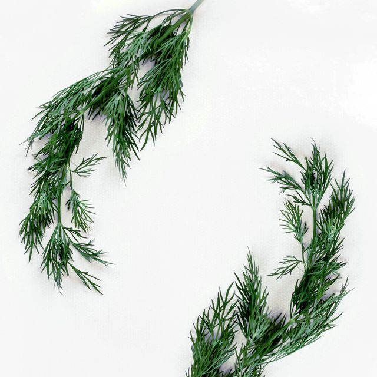

Dillkött

Låtval:
"Ne me quitte pas" Nina Simone
Ingredienser:
Långkok:
- 300 g lammstek (Skuren i bitar à 75 g)
- ½ kruka dill
- ½ liten morot
- 6-7 st vitpepparkorn
- salt
Ättikslag:
- 1 dl vatten
- 1 msk ättika 12%
- 2 msk socker
Sås:
- 5 dl silad buljong från långkoket
- 1 msk smör
- 1 msk vetemjöl
- 1 äggula
- 2 msk vispgrädde
Gör så här:
- Lägg köttet i en större kastrull, fyll på med vatten så det täcker ordentligt, salta. Låt det hela koka upp i någon minut. Häll bort vattnet och spola av köttet under kallvattenkranen.
- Diska ur kastrullen, lägg tillbaka köttet och fyll på med vatten så att det nästan täcker. Koka upp igen och skumma av ordentligt. Skala morot och lägg i tillsammans med purjolöken och pepparkornen. Salta med ½ msk salt per liter vatten. Skär av dillen ovan roten och en bit under toppen. Bind ihop dillstjälkarna med ett snöre och lägg i kastrullen. Hacka dilltopparna inte alltför fint och spara i en skål.
- Låt köttet koka långsamt och länge. Nu doftar det av långkok i hela huset. Räkna med minst 1 ½ timme. Känn efter med en potatissticka, det skall vara ordentligt mört.
- Fiska upp köttbitarna ur kastrullen och skär dem försiktigt i munsbitar och lägg i ett djupt serveringsfat. Håll varmt i ugnen ca. 70°. Låt buljongen stå och småputtra.
- Koka upp ett lag av vatten, socker och ättika, spara i en kopp. Smält smöret i en kastrull och addera mjölet, rör om och låt det precis börja brynas. Tillsätt buljong till redningen, låt koka upp och tjockna i ca. 5 minuter. Tillför en del av ättikslagen och dillhacket. Smaka av, eventuellt behövs mer av lagen eller salt, dett skall vara balans. Rör ut äggulan i vispgrädden och rör ned det i såsen. Såsen får inte koka igen.
- Häll allt över köttet i serveringsfatet. Kokt potatis passar bra till, gärna lite mjölig eller svensk färskpotatis.